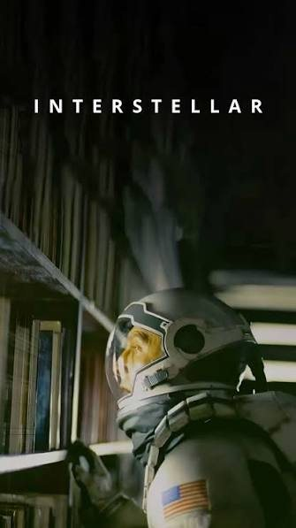

Kinoo
¿qué mood traes?
Filtros
Todas
Apagar el cerebro
Sufrir bonito
Escapar un rato
Sentir algo
Salir pensando
Solo reírme
Algo raro
Cine del bueno

Ver
Descubrir
Comunidad
anoche te quedaste dormido
¿Terminaste Interstellar?
Te quedaste en 1:58
2:49
Respondiste 5 de 7 momentos clave
Sí, la terminé
No, me dormí · seguir desde 1:58
Ya no quiero verla